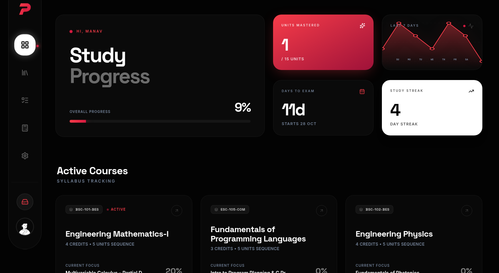
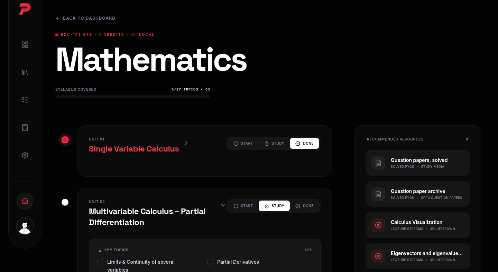
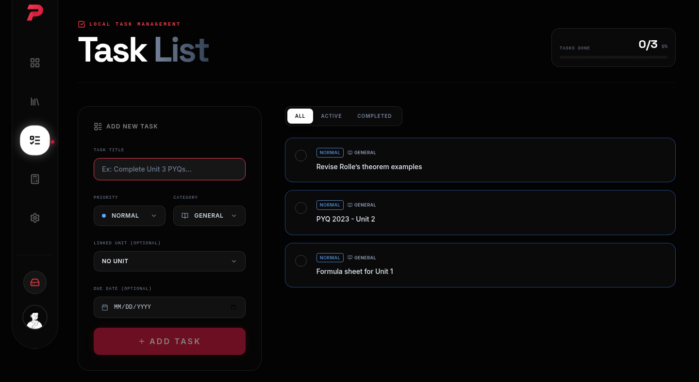
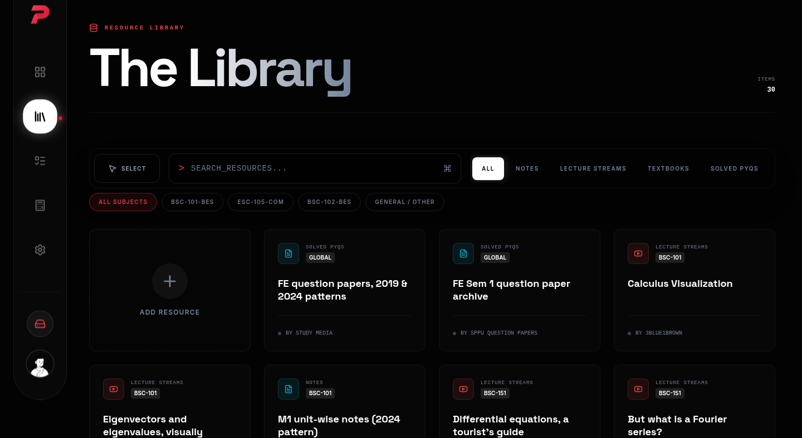
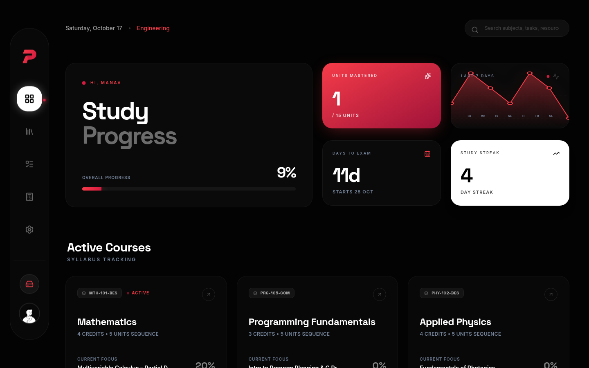
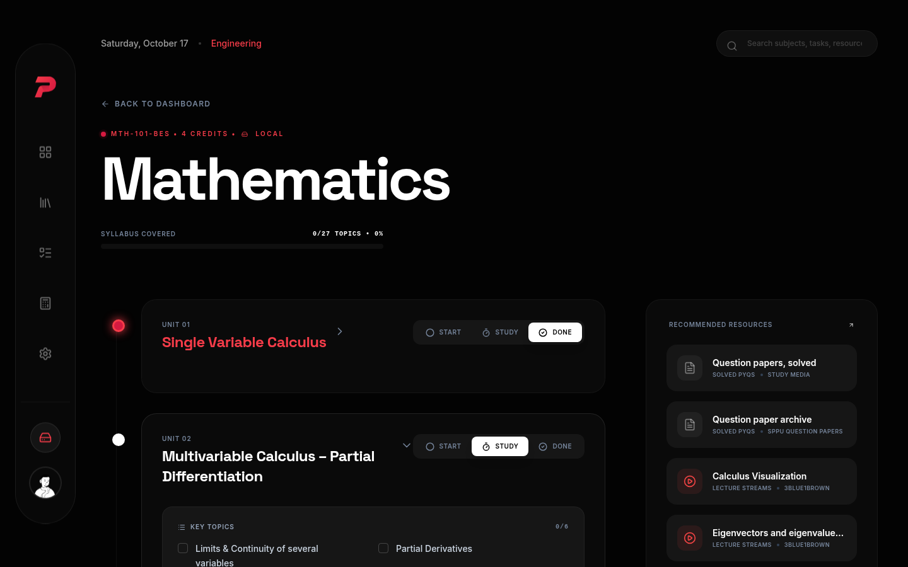
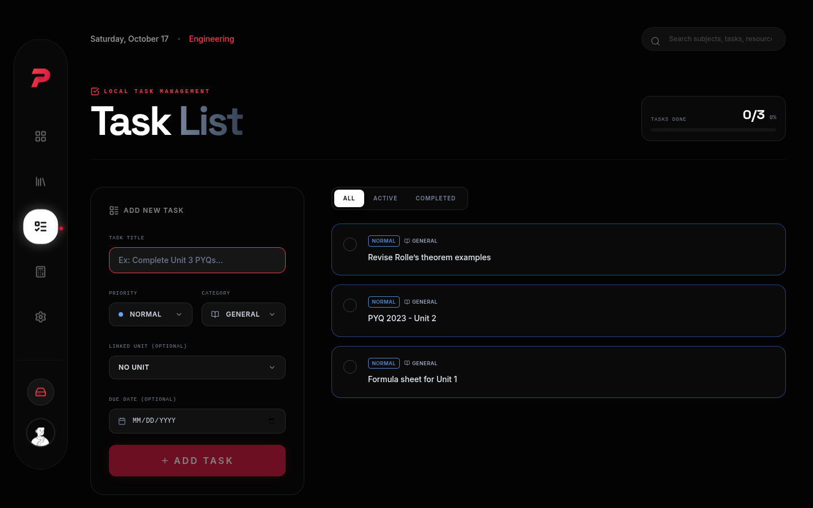
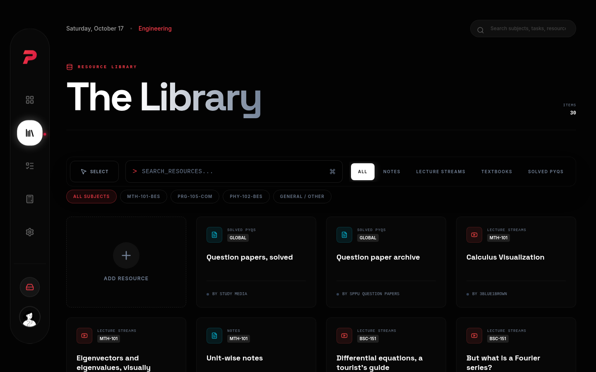

PrepTracker breaks the syllabus into units and topics, counts the days to your exam, and tells you what to study today.
Free · No account · Data stays in your browser




The problem
It’s 2 AM and the syllabus
still isn’t a plan.
Nineteen days out, you have a folder of PDFs, four group chats, and no honest answer to one simple question: what exactly is left?
The fix
Everything the syllabus hides, laid out.
01
Your whole exam, on one screen
Progress across every subject, the days left, and today’s streak. The numbers you used to guess, counted for you.

02
Every unit, every topic, one tick at a time
Each subject broken into its real units and topics. Tick them off as you study and watch the unit flip to mastered.

03
Wake up to today’s list
No planning session every morning. Open the app and the day’s tasks are already there, sized to the days left.

04
Question papers where you study
Previous-year papers and resources sit next to the units they belong to, not in a drive folder you never open.

Word of mouth
In their own words.
How it works
Set up once. Tracked every day.
01.
Pick your subjects
Choose your subjects in the app. Each one shows its units and topics laid out. Select yours and you’re done.
02.
Tick topics as you study
Finished a topic? Tick it. That one habit is the entire system. The app does every calculation after that.
03.
See what’s left, every morning
Progress, streaks and the countdown update themselves. You always know exactly what’s left before the exam.
Walk in knowing
what’s left.
Two minutes to set up. Then the app counts the days, the units and the topics. You just study.
Start trackingFree · No account · Data stays in your browser